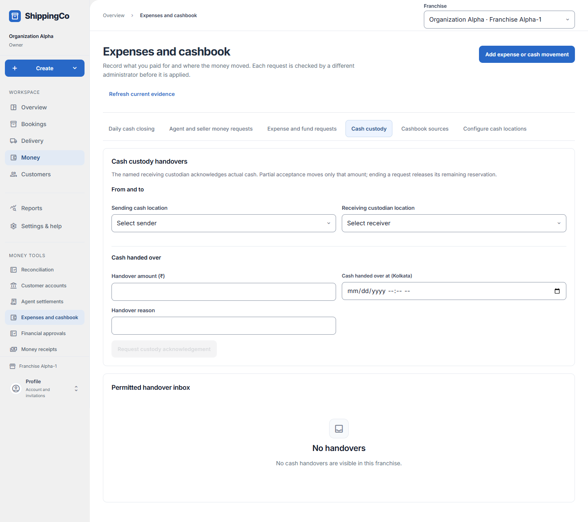

Handing over cash
What this helps you do
- Record cash passed between custodians and the receiver’s actual acknowledgement.
Open this feature
- Money > Expenses and cashbook > Cash custody.
- Check the active branch first. Available actions depend on your role and the selected record.

Request acknowledgement
- Choose Sending cash location and an eligible Receiving custodian location for the actual people involved.
- Enter Handover amount in rupees, actual Cash handed over at time in Kolkata and Handover reason. Select Request custody acknowledgement.
- Check Permitted handover inbox. A request alone does not prove the cash was received.
Receiver response
- The receiving custodian opens the handover, chooses Custody response, enters Actually received cash and Custody response reason, then Record custody response.
- Record the actual count even when it differs; explain the difference instead of changing the count to make it match.
- Inspect acknowledgement history and attribution. Use Earlier acknowledgements, Latest acknowledgements and attribution page controls as needed.
Fields and when to use them
These fields belong to the actions above. Complete the fields for your selected action; optional filters may stay blank.
- Sending cash location: Select the sending cash location involved in this action; check its account and responsible person. Use when shown for the selected action.
- Receiving custodian location: Select the receiving custodian location involved in this action; check its account and responsible person. Use when shown for the selected action.
- Handover amount (₹): Enter the actual amount in rupees. Use no more than two decimal places. Required when this field is shown.
- Cash handed over at (Kolkata): Enter when the event really happened. Use the time zone named in the label. Required when this field is shown.
- Handover reason: Explain why you are making this request or change. Use the real business reason. Required when this field is shown.
- Custody response: The response matching what the receiving custodian actually received. Use when shown for the selected action.
- Actually received cash (₹): Enter the value in rupees, with at most two decimal places. Check the limit shown on screen. Required when this field is shown.
- Custody response reason: Explain why you are making this request or change. Use the real business reason. Required when this field is shown.
If you need to retry
- No records: check branch, account or customer and filters. Use Load more where offered before deciding a record is missing.
- Invalid or missing value: read the form message, correct the draft, then review amounts and references again.
- Uncertain save: use the offered retry for the same request. Do not create a second payment, return, expense or application to guess whether the first saved.
- Changed evidence or policy: refresh current records and review them before a new request. A saved report retains its captured figures; create another report for current results.
About this guide
Checked against the current screen code on 1 November 2026. This explains app behaviour, not tax or accounting advice. Buttons and records can differ by role.